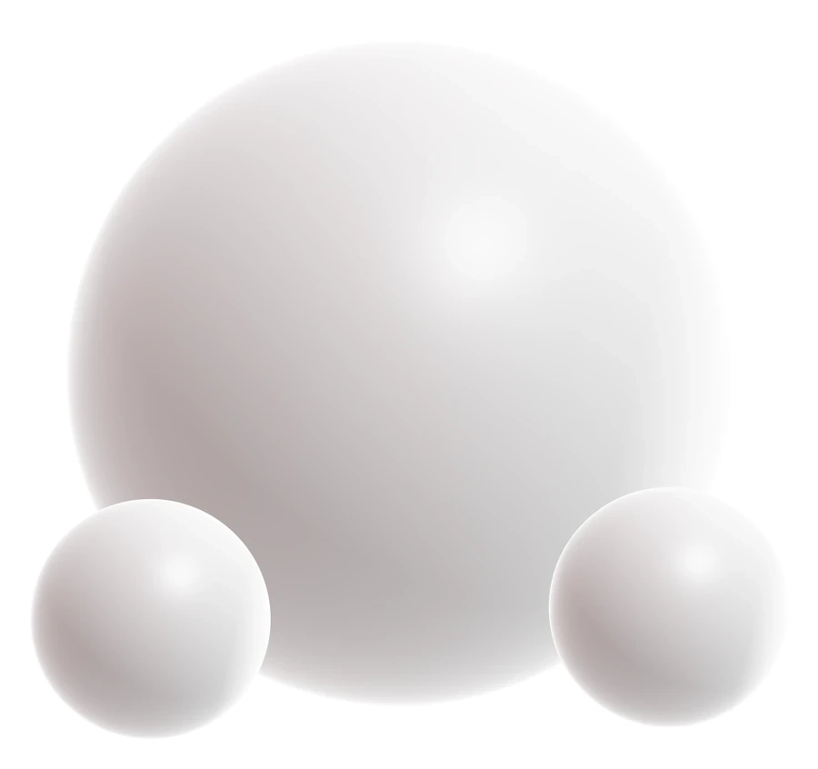
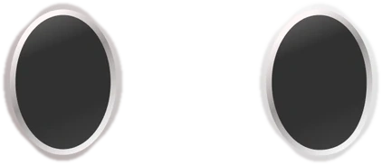
Most focus tools optimize for discipline, and the pressure and guilt that come with it. DotDot is a mixed-reality companion for MR/AR glasses, designed for neurodivergent minds, that replaces rigid timers with a gentle, non-judgmental presence.
This page follows the project from one question: what if focus didn’t have to feel like a test? Four stages took it from interviews to a working focus loop.
Four stages — from listening to people, to finding where focus breaks, to designing a response, to prototyping it. The numbers match the sections below.
Treat distraction as a condition of the environment, not a failure of discipline.
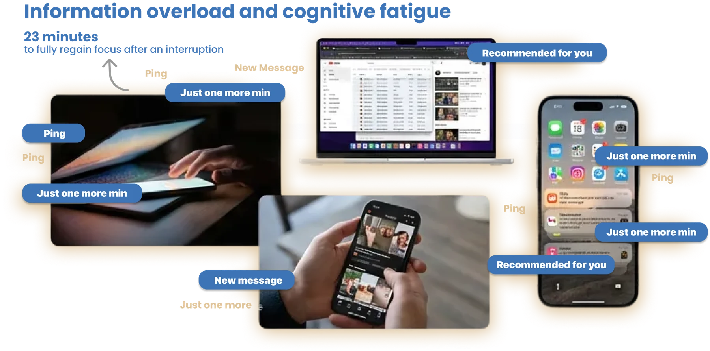
A countdown makes every lapse feel like falling behind.
Losing a streak turns a slip into self-blame.
A plan that assumes stable attention gets abandoned.
“Most of the time I don’t notice I’m distracted until it’s already happened.”
“Timers make me anxious. Once I break the streak, I feel like I’ve already failed.”
“I don’t need something to push me harder. I need something that stays when my brain drifts.”
Distraction emerges quietly, often without conscious intent.
Participants consistently describe wanting companionship.
Timers and streaks amplify guilt rather than recovery.
Once a tool induces shame, it is often permanently dropped.
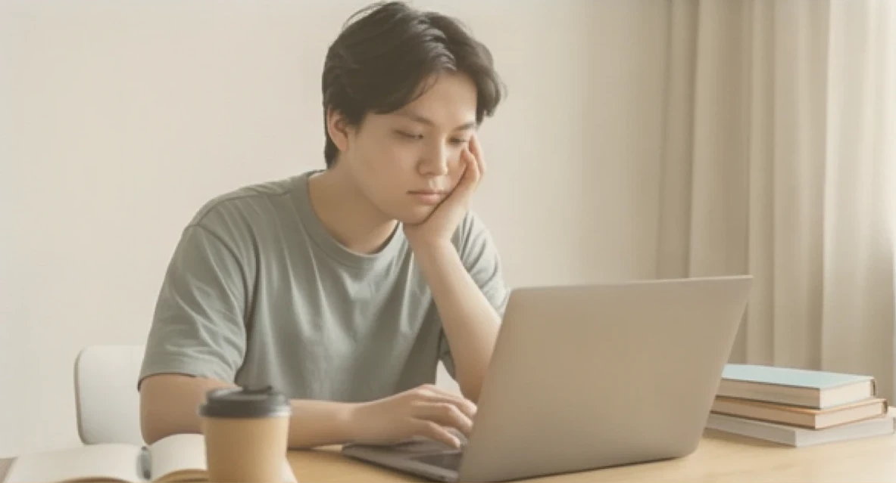
Can enter deep focus, but not consistently. Highly sensitive to interruption. Emotionally reactive to failure framing.
Design for the moment of breakdown, not for the plan.
Planning reduces uncertainty, not execution. Lists comfort but don’t lower the barrier to starting.
Planning reduces uncertainty, not execution. Lists comfort but don’t lower the barrier to starting.
Mild resistance. The phone stays within reach, unnoticed.
Focus appears briefly but stays fragile, sustained only by effort.
Cognitive fatigue surfaces before distraction. Willing, but with reduced capacity.
Rest lacks structure and quietly turns into escape.
Not a desire to chat, but a desire not to work alone.
Awareness returns with guilt. The emotional cost of returning rises.
Structure is imposed too late. Tools assume a readiness that no longer exists.
The session ends early, or continues through unsustainable hyperfocus.
Output exists, but accomplishment doesn’t. Failure is silently recorded.
Focus breaks not because of distraction, but because fatigue, loneliness, and transitions are unsupported.
THE INSIGHTTools adapt to changing energy and capacity instead of demanding a fixed state of readiness.
Lapses are normalized and met with gentle recovery, not judgment.
Non-intrusive scaffolding and social presence bridge gaps in motivation.
Dotty doesn’t reward productivity. It acknowledges effort.
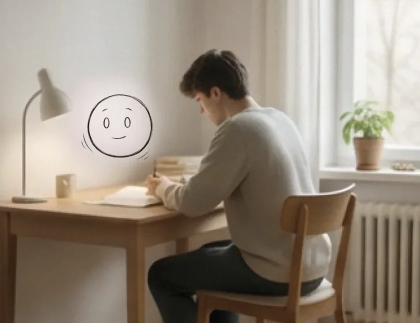
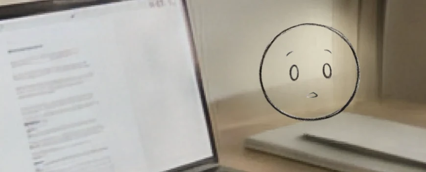
Dotty appears and says Focus Mode is standing by. No setup or planning needed.
Attention naturally fluctuates. These moments are treated as signals, not failures.
Dotty offers rest or a short meditation, framing recovery as a transition, not escape.
Dotty gently notes the restlessness. The goal is awareness, not correction.
Dotty stays quietly present throughout, supporting body doubling and reducing loneliness.
At session end, Dotty reflects time, consistency and effort with nonjudgmental feedback.
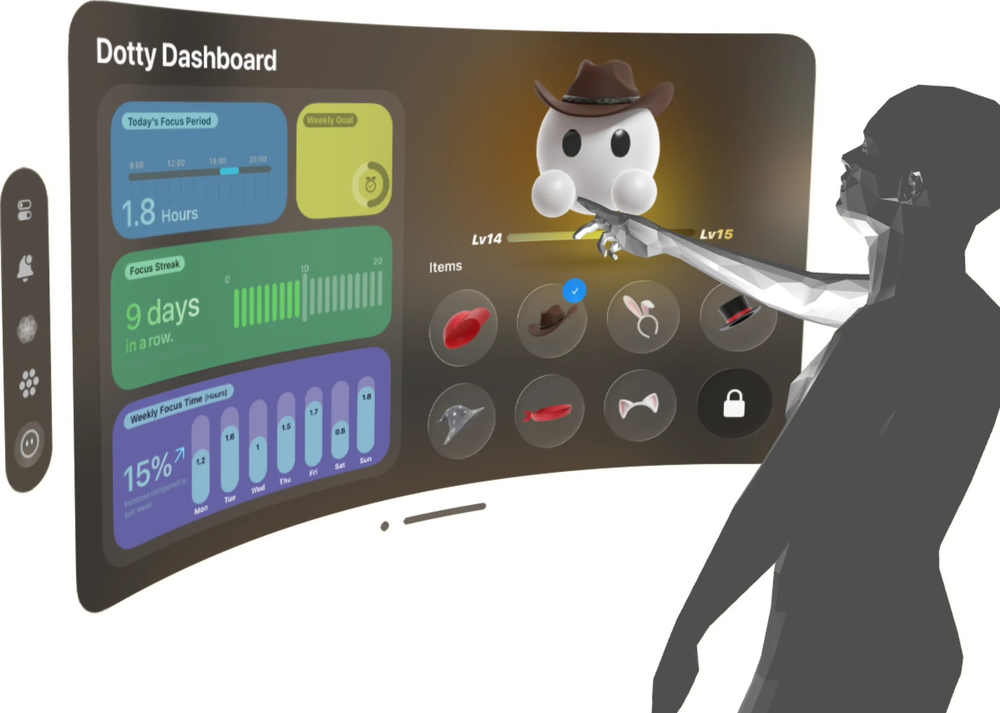
Make progress felt, not measured.
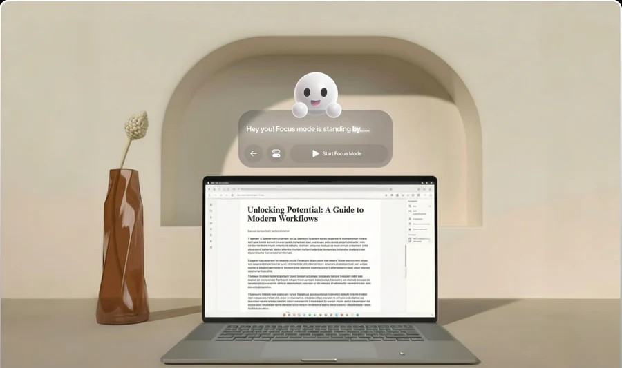
01 · ENTERING FOCUS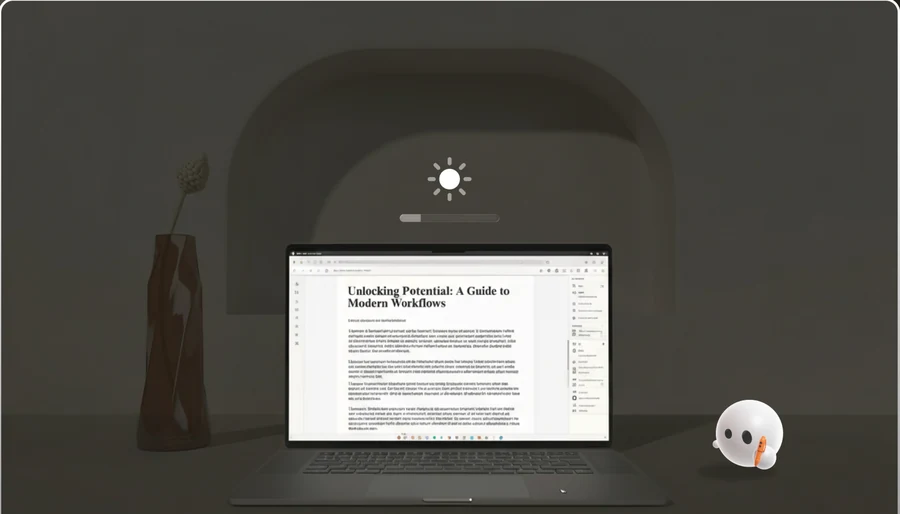
02 · ENVIRONMENT DIMMING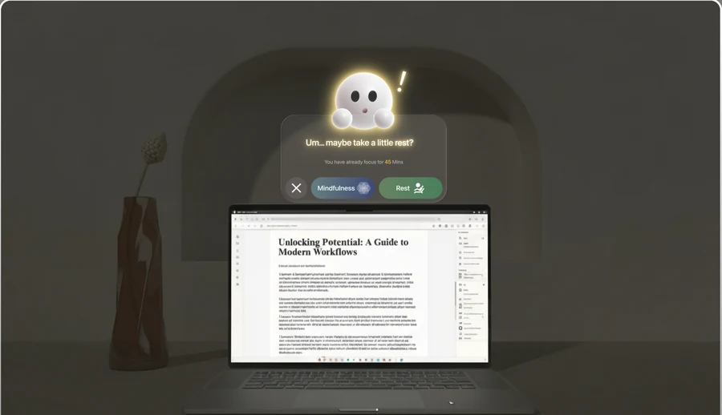
03 · TIME TO REST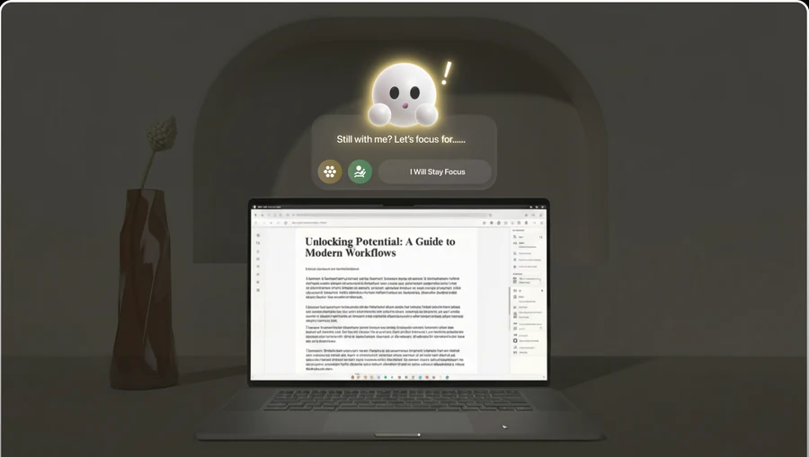
04 · ATTENTION DRIFT DETECTED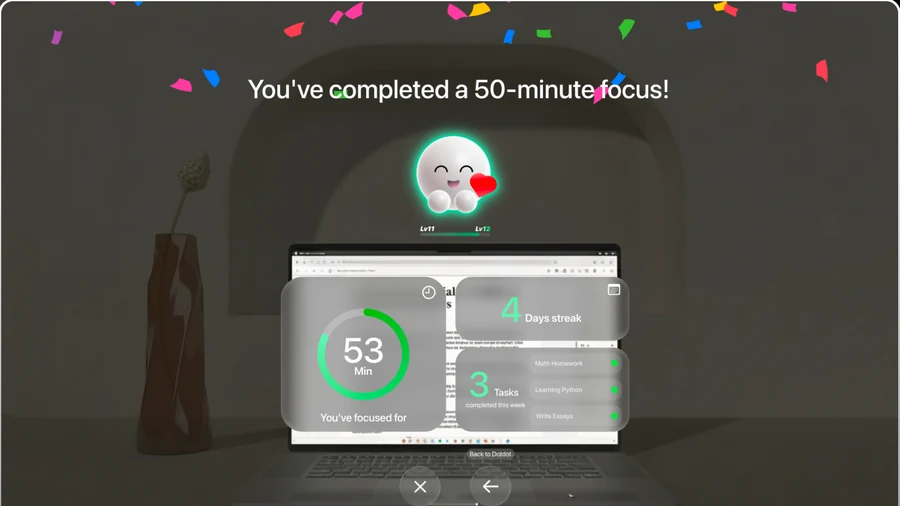
06 · SESSION REFLECTION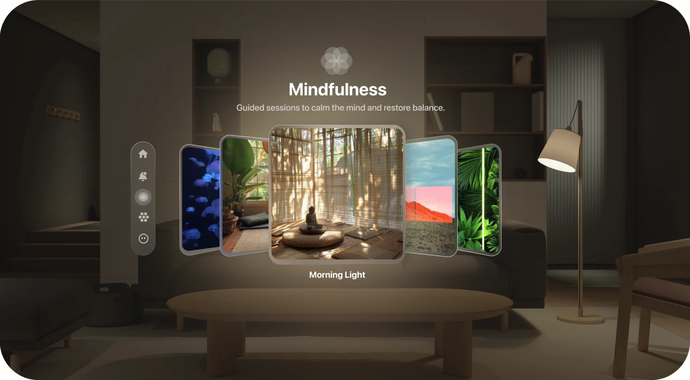
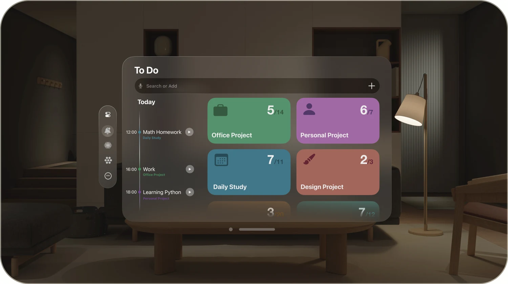
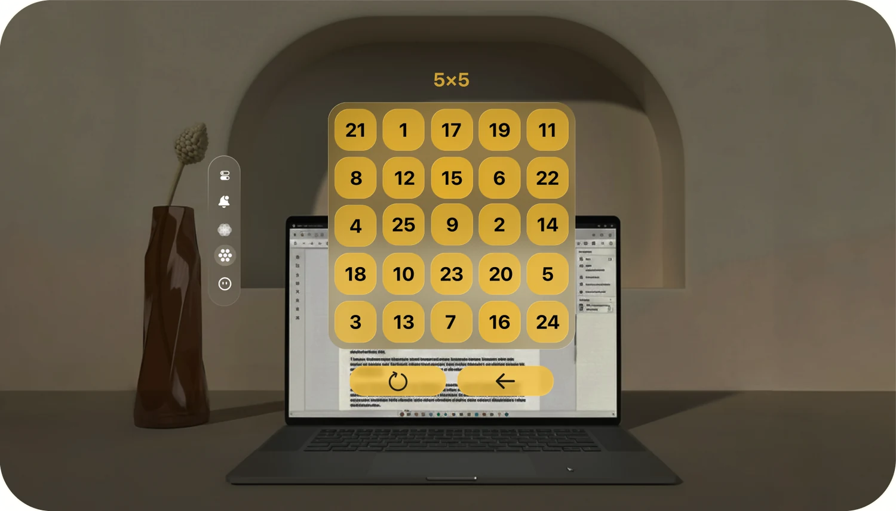
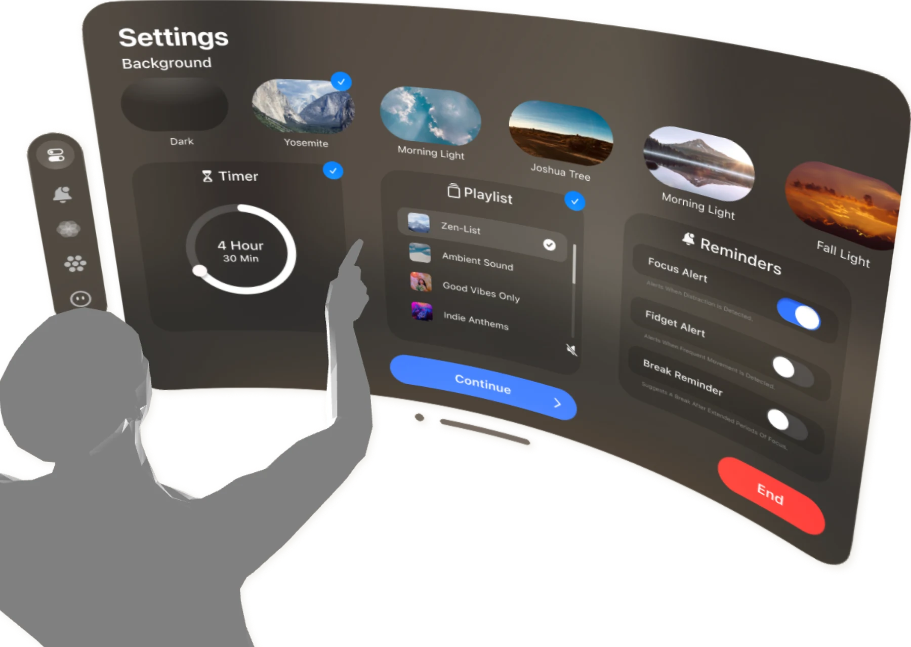
Start from the moment something breaks, not from a feature list.
Remove the first decision. If setup is a hurdle, begin before explaining.
Design for presence, not control.
Make progress felt, not measured.